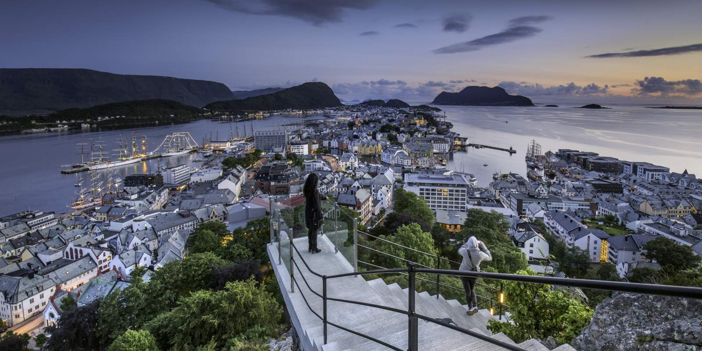
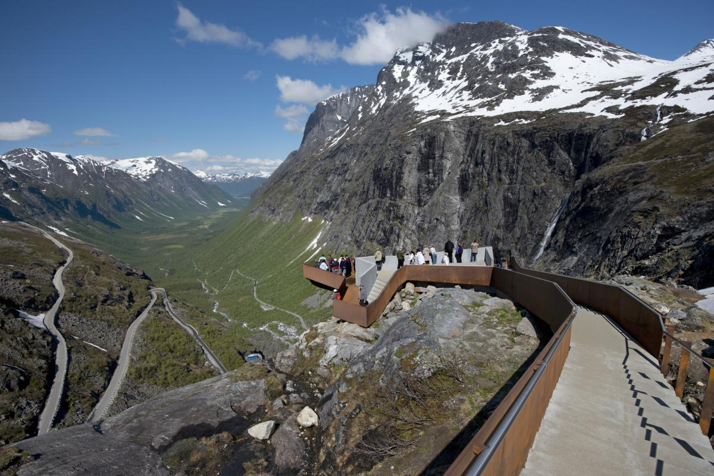
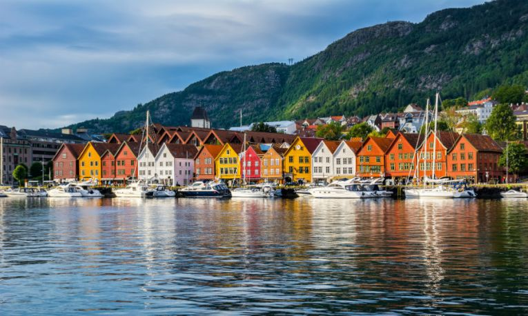
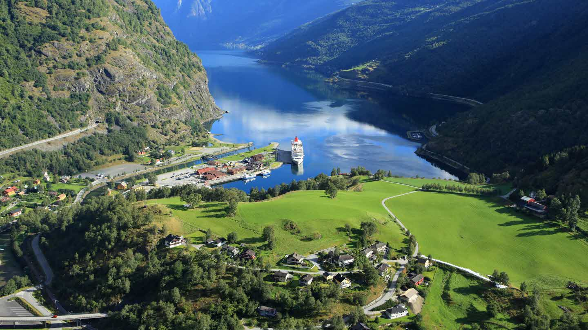

Discover the day-by-day itinerary, created just for you:
Day 01 - Land in Alesund, then dinner and Midnight Sun walk
welcome to fabulous Alesund! After landing, make sure to check-in at the hotel, then take a moment to freshen-up, and head out to town. After dinner, enjoy a long walk under the Midnight Sun. Don't forget to hit the Aksla Viewpoint for the most spectacular views in town.

Day 02 - Troll's Road drive and Geiranger fjord
Start the day with a winding drive on the tight curbs of Trollstigen. Then, a quick hike to enjoy the scenery and well-deserved lunch. In the afternoon drive all the way to Geiranger fjord to have aan evening view of the gorgeous area.

Day 03 - Full day in Bergen
Drive in the morning to the city of Bergen. Enjoy walks during the day in the Brygge area, and up on Floyen mountain (do like the locals and use Floibanen funicular!)

Day 04 - Flam with hike to Bekkefosen waterfall and evening in Geilo
Drive to Flam and enjoy lunch and a walk around town. Then, head up to Brekkefosen waterfall. Afterwards, drive up to Geilo and take your time with some evening hikes up the ski slopes for some amazing views.

Day 05 - Oslo fullday, then return home
For the last day, take a drive to the city of Oslo. Have some time to explore the city and see the Opera House and Vigeland Sculpture Park. Then, board the train, and head back home.